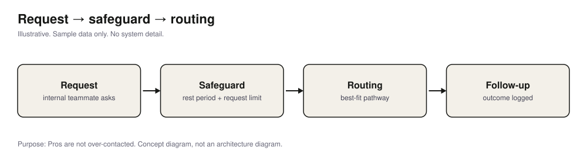
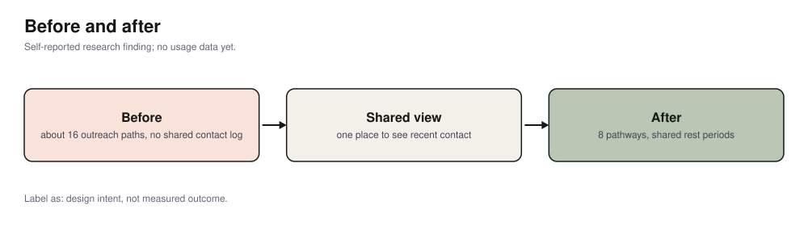
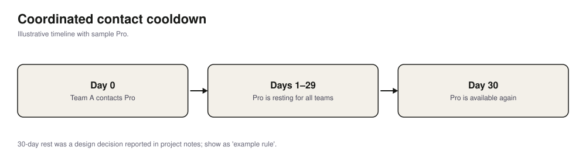

Turn scattered asks into defined pathways.
Self-serve routes clarify the need before the request reaches a program owner.
Pro Connect turned scattered internal asks of service Pros into a shared workflow with coordinated rest periods, clearer ownership, and a reviewed data path.
Teams across the company needed customer participation for research, programs, stories, events, and feedback. The asks arrived through different channels, without a shared view of recent contact.
My research surfaced roughly sixteen outreach paths, three intake channels, and no common contact log. That made it difficult to protect a strong customer from being asked for too many favors by different teams.
The system evaluates the customer-contact context before treating a request as a routing problem.
A shared path makes the request, owner, safeguard, and follow-up legible across teams.
Research and program workflows support decisions; they do not automate away consent or relationship context.
Self-serve routes clarify the need before the request reaches a program owner.
Recent contact becomes visible so one Pro is not repeatedly approached by different groups.
The application uses company-platform sign-in and an IT-reviewed webhook instead of direct database credentials.
Research sourcing and program routing surface context while leaving consent and relationship decisions with people.
The build includes test coverage, dependency review, a threat model, and documented handoff practices.
The product is live internally. Adoption, request volume, time saved, and customer impact still need to be measured.



A modern web application with a managed data layer, company-platform sign-in, and a reviewed data-access path.
Automated tests, dependency checks, security documentation, and review were treated as part of the build—not cleanup after it.
The release includes written decisions and maintenance context so the system can be reviewed and supported beyond its creator.
The product moved from research to specification, implementation, review, remediation, and internal release. I am deliberately not claiming usage or ROI before the data exists.